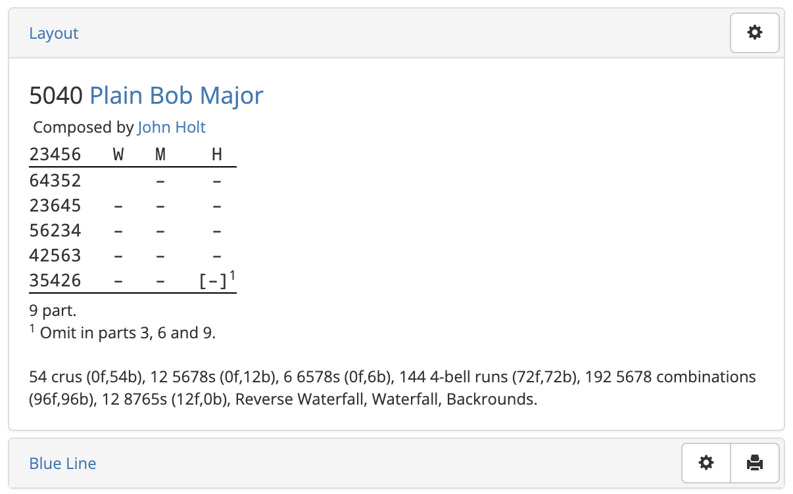

Composition Pages

As its name suggests, Complib has been designed as a library for change ringing compositions. In the most general terms, a composition is a specified calling for a change ringing performance. A composition is stored in Complib as this calling, together with specified method(s) for which it has been designed.
Complib automatically pricks (i.e. generates the rows of) any composition when it is entered in order to establish its truth. Stored compositions are then given their own dedicated page, which has a number of expandable tabs:
- Layout
- The human-readable form of the composition. Users can adjust the form and style of the layout to suit a wide variety of needs and preferences (see Customising composition layouts).
- Blue Line
- The pricked rows of the composition, with (or without) an overlaid blue line.
- Music Score
- The music score breakdown of the composition with respect to a specified music scheme. Users can use one of the default schemes (including for half-muffled ringing), or specify their own.
- Handbell Positions
- A table specifying which positions each handbell pair rings during the composition, as well as the number of leads rung (if applicable) and their relative prevalence.
- Properties
- The technical features of the composition, such as its length, number of parts, whether it is all-the-work, and more.
- Related Compositions
- A list of all compositions which are related to the current one, i.e., because they are related by some transformation such as rotation or reversal, or because they have the same calling but different specified methods.
- Performances
- Historical information about occasions when the composition has been performed, with links to the relevant Bellboard page.
- References
- A list of all accessible collections containing the current composition. If you own a private collection containing the composition, it will be included here.
- Library Details
- Information pertaining to the composition's Complib entry, including which library it is contained in, the corresponding Composition Id, any Notes included by the publisher, etc.